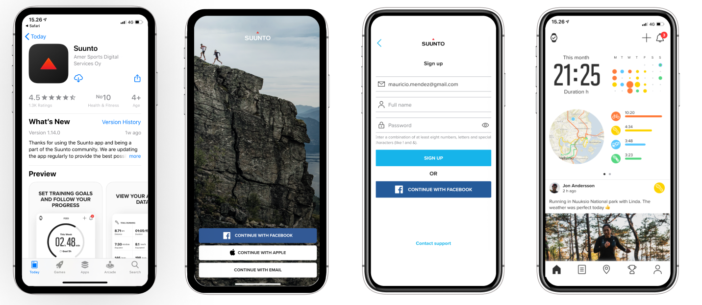

从 Movescount 到 Suunto App：一款运动手表软件的十年迁徙
2022 年 Movescount 关闭只是冰山一角。我追踪 Suunto 的软件体系好几年，从 Ambit 时代的网页社区到现在的一体化 App，几次大的架构取舍，背后是一家芬兰公司对运动数据这件事的根本态度变化。
现在这版是什么样
我手上这块 Suunto 9 已经用了快三年。每次抬手看表、晚上躺床上翻数据，用的都是那一个 App——界面干净、首页是仪表盘卡片、训练完自动生成一条记录、地图页可以直接画路线或者导入别人分享的 GPX。看起来很正常对吧？但如果你跟我一样经历过它的上一个时代，就知道这种"一个 App 搞定一切"的状态，其实是历经了好几个版本才磨出来的——去Suunto官网看一眼产品页，官方现在主推的也是这个一体化方案。

Suunto 目前的官方软件体系是这样的：手机端 App 负责日常记录、运动模式自定义、路线规划和数据回看；电脑端 SuuntoLink 留着给老表款做深度设置和固件升级；Suunto Plus 生态作为补充，提供一些进阶训练功能。文档里提到的训练负荷追踪、潜水模式、多运动项目支持——这些都是近几年逐步叠上来的功能，不是一开始就有的。
但有个事实很多新用户不知道：Movescount 这个名字，曾经是 Suunto 用户社区的代名词。
来路：Movescount 时代的格局
如果你早期买的是 Ambit 或者 Spartan 系列腕表，Movescount 是绕不开的名字。那是 Suunto 运营了多年的网页社区，锻炼记录同步、腕表设置、运动模式自定义全在浏览器里做，手机端当时还有一个配套的 Movescount App。
我第一次接触 Movescount 是在 2015 年，那时它的界面在同类产品里算精致的——训练数据的可视化做得很漂亮，社区里能看到其他人分享的路线。但问题也从那个时候开始显现：网页端的更新节奏越来越慢，手机端 App 的版本迭代像是在维持旧系统的兼容性，而不是给新用户更好的体验。
然后是 2020 年前后的过渡期：Suunto 开始推新的 App，但老表款和新 App 之间的兼容性问题一直没完全解决。我身边有朋友新买了 Suunto 9，装了新 App，发现一些高级设置还得跳到 Movescount 网页端才能改。那段时间的 Suunto 用户体验像是被劈成了两半——一半在新 App，一半还卡在旧时代。
转折点是 2022 年 1 月 10 日：Movescount 网页服务永久关闭。官方在关闭前开过一个数据迁移窗口，让老用户把历史记录搬进新的 Suunto 账号体系。迁移窗口过了之后，没搬的就真找不回来了。
Movescount 关了之后，老表款的深度设置去哪了？文档里说得清楚：运动模式自定义、固件升级这些事，现在要通过电脑端 SuuntoLink 来做，它的下载入口也集成在 Suunto 官方渠道里。手机 App 只管它管得了的——日常同步、锻炼记录、基础的运动模式调整。
几个关键转折点
从 Movescount 到现在的 Suunto App，不是简单的"换了个名字"，而是几次根本性的架构调整：
第一次转折：从社区到工具。Movescount 本质上是一个运动社区——用户分享路线、互相看训练数据、排行榜竞争。新的 Suunto App 从第一天开始就没有社区基因，它就是一个数据管理工具。训练完自动记录、路线规划、多设备同步，功能很"干"，没有社交元素。这个取舍当时争议很大，老用户怀念 Movescount 的社区氛围，但从产品逻辑上讲，砍掉社区让 App 的迭代速度明显加快了。
第二次转折：从网页优先到移动端优先。Movescount 的核心在网页端，手机 App 只是个同步辅助。新架构彻底颠倒了这个优先级——手机 App 是主战场，网页端几乎被废弃，只给 SuuntoLink 留了一个桌面客户端。这个决定对团队的工程资源分配影响巨大：以前一半人在做前端网页，现在全部转向了移动端。
第三次转折：运动模式从固定到完全自定义。Movescount 时代的运动模式是预设的，用户能改的东西很有限。新 App 里你可以从零创建一个运动模式，选布局、配数据字段——Suunto文档里提到的"布局决定屏幕分几行几列、字段决定信息内容"这套系统，是在 Suunto Spartan 后期开始铺垫、Suunto 9 时才完全成熟的。我记得第一次看到有人把跑步模式改成了三屏轮读，每屏字段完全不一样，那种自由度是 Movescount 想都没想过给用户的。
第四次转折：地图能力从无到有。Movescount 时代的路线规划只能在网页上做，而且功能简单。新 App 把地图直接塞进了手机端——可以手画路线、可以导入 GPX 文件、可以看海拔图。Suunto 9 出的时候，地图导航已经成了核心卖点。我去年参加一个越野赛，用 App 导入了官方发的赛道 GPX，腕表导航精度出奇地好。这个能力的积累不是一蹴而就的，中间至少迭代了三个大版本才稳定下来。
从迭代节奏看团队的优先级
追踪了这么多年，我对 Suunto 软件团队的节奏有个印象：他们对运动数据的准确性和一致性有近乎偏执的要求，但对用户界面的花哨程度一直不太上心。
你看他们的迭代脉络：训练负荷追踪、潜水模式、GPS 精度优化、电池模式调整——这些都是直接影响运动体验的硬功能，出现在每一个版本的更新日志里。但你再看看 App 的首页设计，从 Suunto 9 第一代到现在，仪表盘卡片的布局几乎没动过，只是在不同表款之间做了些微调。这种"功能优先、界面次之"的策略，在运动手表厂商里挺少见的——Garmin 每年都在换界面，但 Suunto 不。
还有一个观察：他们对老用户的兼容做得比一般厂商要好。Movescount 关了，但 Ambit3 和 Traverse 这些老表款到今天还能连新 App 同步锻炼记录，只是深度设置要走电脑端 SuuntoLink 了。文档里专门写了"老表连 SuuntoLink 都认不出来"的排查步骤，这种对老用户的照顾，让很多 Suunto 老粉愿意继续买新表。
但也有一直没解决的事。Suunto Plus 生态出来好几年了，第三方训练内容的更新频率一直不高；手机 App 和 SuuntoLink 之间偶尔还会出现数据不同步的问题——我自己就遇到过一次，腕表上的运动模式改完，电脑端 SuuntoLink 里还是旧版本，重启 App 才同步过来。这类问题不算严重，但一直没从根上清理干净。
照这个路线，下一步大概率会怎样
从近几年的迭代节奏来看，我觉得有三个方向是比较明确的：
第一，Suunto Plus 生态会继续加强。他们已经在文档里提到了 Partners 服务，和 Strava、TrainingPeaks 这些平台的数据互通是迟早的事。Suunto 自己的社区没建起来，但他们不打算自己做社区，而是把自己定位成一个"数据管道"——你的训练数据愿意同步给谁都可以。
第二，地图能力会进一步升级。3D 地形显示、热力图、转弯提示这些功能在高端表款里已经有了，但中端表款还在慢慢补齐。Suunto 在户外导航这个领域的积累比大部分运动手表厂商都深，这块应该还会继续深挖。
第三，老表款的支持会逐步收口。SuuntoLink 现在还能管 Ambit 和 Traverse，但新的运动模式自定义功能只对 Suunto 9 和 Spartan 开放。再出两代新表之后，SuuntoLink 可能也会被逐步边缘化，只留固件升级这一个功能。
这些都是从迭代规律推出来的，不是官方口径。但 Suunto 这些年的路线其实很清晰：他们不想做一个运动社区，也不想做一个花哨的智能手表软件——他们想做的，就是一个让认真运动的人能准确记录、准确回看、准确规划的工具。从 Movescount 到现在的 Suunto App，绕了这么大一圈，最后落点还是这个。关于 Suunto 的详细文档整理，GitHub、Gitee、GitCode 三个仓库都有收录，按各自的网络环境选哪个方便用哪个。